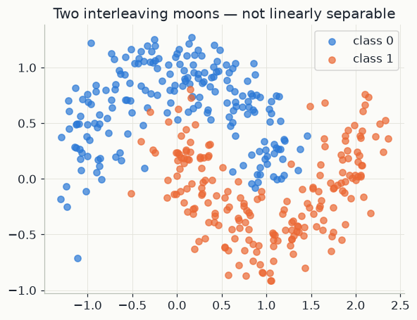
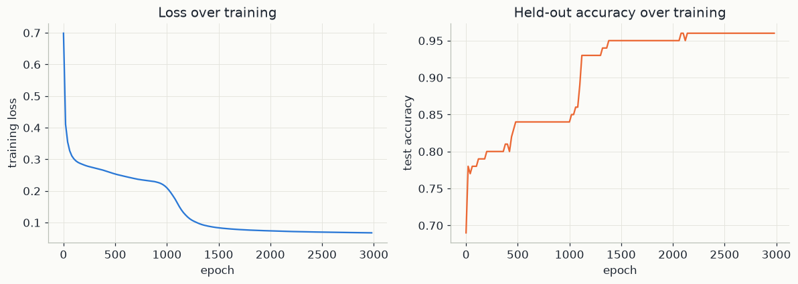
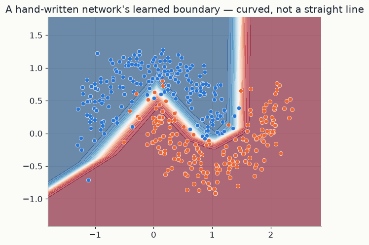

import numpy as np
import matplotlib.pyplot as plt
from sklearn.datasets import make_moons
from sklearn.model_selection import train_test_split
import mlutils
mlutils.set_style()
rng = np.random.default_rng(0)1. From one neuron to a network
A single artificial neuron takes a list of numbers, weighs each one, adds a constant, and passes the result through a fixed function. With an input x \in \mathbb{R}^d (here d = 2: the two coordinates of a point), a weight vector w \in \mathbb{R}^d and a bias b (a single number):
z = w^\top x + b = w_1 x_1 + \dots + w_d x_d + b, \qquad a = g(z).
z is the pre-activation, a weighted vote of the inputs. g is the activation function, and a is the neuron's output. The points where z = 0 form a straight line in the plane (a hyperplane in higher dimensions), so one neuron on its own can only split the plane with a straight cut.
Two activations appear in this chapter:
- ReLU, \mathrm{ReLU}(z) = \max(0, z): it passes positive values and replaces negative ones by 0. Its derivative is 1 for z > 0 and 0 for z < 0.
- Sigmoid, \sigma(z) = \dfrac{1}{1+e^{-z}}: it maps any real number into (0, 1), with \sigma(0) = 0.5, \sigma(z) \to 1 as z \to +\infty and \sigma(z) \to 0 as z \to -\infty.
A layer is many neurons at once. Put h neurons side by side, each with its own weights. Their weight vectors form the columns of a matrix W \in \mathbb{R}^{d\times h}, and their biases form a row b \in \mathbb{R}^{1\times h}. The code stores the n points as the rows of a matrix X \in \mathbb{R}^{n\times d}, so a single matrix product evaluates every neuron on every point:
Z = XW + b ,
with b added to every row. Entry Z_{ik} is neuron k's pre-activation on point i.
The network in this chapter has a hidden layer of 8 ReLU neurons and one sigmoid output neuron:
z_1 = X W_1 + b_1,\qquad a_1 = \mathrm{ReLU}(z_1),\qquad z_2 = a_1 W_2 + b_2,\qquad \hat y = \sigma(z_2).
| symbol | code | shape | meaning |
|---|---|---|---|
| X | X |
n\times 2 | inputs, one point per row |
| W_1, b_1 | W1, b1 |
2\times 8, 1\times 8 | hidden-layer weights and biases |
| z_1, a_1 | z1, a1 |
n\times 8 | hidden pre-activations and outputs |
| W_2, b_2 | W2, b2 |
8\times 1, 1\times 1 | output weights and bias |
| z_2, \hat y | z2, y_hat |
n\times 1 | output pre-activation and probability |
In total there are 2\cdot 8 + 8 + 8 + 1 = 33 numbers to learn.
Why the nonlinearity is essential. Remove the ReLU, so that a_1 = z_1. Then
z_2 = (XW_1 + b_1)W_2 + b_2 = X\,(W_1W_2) + (b_1W_2 + b_2) = X W' + b' .
W' = W_1W_2 is a 2\times 1 matrix and b' is one number: the two layers collapse into a single neuron, and the boundary is a straight line again. Any stack of linear layers is one linear layer in disguise. The ReLU breaks this. Each hidden unit is flat on one side of its own line and rises linearly on the other, and a weighted sum of 8 such bent pieces can form a curved boundary.
2. A probability output and the cross-entropy loss
The label y is 0 or 1. The output \hat y = \sigma(z_2) \in (0,1) is read as the network's estimate of the probability that y = 1. To train the network we need a number that says how well such probabilities match the observed labels.
Treat y as a coin flip, a Bernoulli variable, that lands on 1 with probability \hat y. The probability the model gives to the label actually observed is
P(y \mid x) = \hat y^{\,y}\,(1-\hat y)^{1-y} .
This is \hat y when y = 1 and 1-\hat y when y = 0, since any number to the power 0 equals 1. If the n training labels are independent, the probability of all of them together is the product \prod_i P(y_i \mid x_i), called the likelihood. A good model makes it large. Three small moves turn this into a loss: take the logarithm (a product becomes a sum, and the maximiser does not change because \log is increasing), flip the sign so that we minimise, and divide by n to get an average:
L = -\frac1n \sum_{i=1}^n \big[\,y_i\log \hat y_i + (1-y_i)\log(1-\hat y_i)\,\big].
This is the binary cross-entropy, bce_loss in the code. For one point with
y = 1 the loss is -\log\hat y: it is 0.105 when \hat y = 0.9, 0.693 when
\hat y = 0.5, and 4.6 when \hat y = 0.01. Confident mistakes cost a lot, and the
loss grows without bound as \hat y \to 0.
3. Backpropagation: the chain rule, layer by layer
To improve the weights we need the gradient: how L changes when each weight
changes slightly. The network is a chain of functions,
X \to z_1 \to a_1 \to z_2 \to \hat y \to L, and the chain rule says that the
derivative of a chain is the product of the derivatives of its links.
Backpropagation applies the chain rule from the loss backward, reusing each
result for the layer below. Write \delta_2 = \partial L/\partial z_2 and
\delta_1 = \partial L/\partial z_1; in the code they are dz2 and dz1.
Step 1: the output error. For one point the loss is \ell = -[\,y\log\hat y + (1-y)\log(1-\hat y)\,]. Its derivative with respect to \hat y, over a common denominator, is
\frac{\partial \ell}{\partial \hat y} = -\frac{y}{\hat y} + \frac{1-y}{1-\hat y} = \frac{-y(1-\hat y) + (1-y)\hat y}{\hat y(1-\hat y)} = \frac{\hat y - y}{\hat y(1-\hat y)} .
The sigmoid's derivative follows from \sigma(z) = (1+e^{-z})^{-1}:
\sigma'(z) = \frac{e^{-z}}{(1+e^{-z})^2} = \sigma(z)\big(1-\sigma(z)\big), \qquad\text{so}\qquad \frac{d\hat y}{dz_2} = \hat y\,(1-\hat y) .
Multiply the two links:
\frac{\partial \ell}{\partial z_2} = \frac{\hat y - y}{\hat y(1-\hat y)}\cdot \hat y(1-\hat y) = \hat y - y .
The awkward fractions cancel exactly. The error signal at the output is "prediction
minus truth": positive when the model said too much, negative when it said too
little, near zero when it is right. Because L averages over n points, row i of
\delta_2 is (\hat y_i - y_i)/n. This is the first line of backward.
Step 2: the output weights. For point i, z_{2,i} = \sum_k a_{1,ik}W_{2,k} + b_2, so \partial z_{2,i}/\partial W_{2,k} = a_{1,ik}. Adding the contributions of all points:
\frac{\partial L}{\partial W_{2,k}} = \sum_i a_{1,ik}\,\delta_{2,i}
\quad\Longrightarrow\quad
\frac{\partial L}{\partial W_2} = a_1^\top \delta_2 ,\qquad
\frac{\partial L}{\partial b_2} = \sum_i \delta_{2,i} .
A weight's gradient is (the input flowing into that weight) times (the error at its output), summed over points. A hidden unit that was silent on a point (a_{1,ik} = 0) takes no blame for it.
Step 3: back into the hidden layer. Hidden output a_{1,ik} reaches z_{2,i} through the weight W_{2,k}, so \partial L/\partial a_{1,ik} = \delta_{2,i}W_{2,k}, or in matrix form
\frac{\partial L}{\partial a_1} = \delta_2 W_2^\top \qquad (n\times 8).
Then pass through the ReLU, whose derivative is 1 where z_1 > 0 and 0 elsewhere:
\delta_1 = \frac{\partial L}{\partial z_1} = \big(\delta_2 W_2^\top\big) \odot \mathbf{1}[z_1 > 0] .
Here \odot is entry-by-entry multiplication and \mathbf{1}[z_1 > 0] is a mask of
zeros and ones, (z1 > 0) in the code. Error flows back only through units that were
active.
Step 4: the hidden weights. This is Step 2 again, one layer down, with X as the input:
\frac{\partial L}{\partial W_1} = X^\top \delta_1 \quad (2\times 8),\qquad
\frac{\partial L}{\partial b_1} = \sum_i \delta_{1,i} \quad (1\times 8).
Every gradient has the same shape as the parameter it belongs to, which is a useful check on the algebra.
4. Gradient descent, and one neuron by hand
The gradient points in the direction in which L grows fastest. Gradient descent takes a small step the opposite way, for every parameter \theta:
\theta \leftarrow \theta - \eta\,\frac{\partial L}{\partial \theta},
where the learning rate \eta > 0 sets the step size (lr in the code). Why this
lowers the loss: writing g for the gradient, a first-order Taylor expansion gives
L(\theta - \eta g) \approx L(\theta) - \eta\,\lVert g\rVert^2. The change is negative
whenever g \neq 0 and \eta is small enough for the approximation to hold.
Worked example: one sigmoid neuron with two inputs. Take the input x = (1, 2), label y = 1, weights w = (0.5, -0.25), bias b = 0 and \eta = 0.5. For one neuron the output shortcut is the same, \partial\ell/\partial z = \hat y - y, and Step 2 gives \partial\ell/\partial w_j = (\hat y - y)\,x_j and \partial\ell/\partial b = \hat y - y.
| step | computation | value |
|---|---|---|
| pre-activation | z = 0.5\cdot 1 + (-0.25)\cdot 2 + 0 | 0 |
| output | \hat y = \sigma(0) | 0.5 |
| loss | -\log 0.5 | 0.693 |
| output error | \hat y - y = 0.5 - 1 | -0.5 |
| gradient for w_1 | -0.5 \cdot 1 | -0.5 |
| gradient for w_2 | -0.5 \cdot 2 | -1.0 |
| gradient for b | -0.5 | -0.5 |
| new w_1 | 0.5 - 0.5\cdot(-0.5) | 0.75 |
| new w_2 | -0.25 - 0.5\cdot(-1.0) | 0.25 |
| new b | 0 - 0.5\cdot(-0.5) | 0.25 |
With the new parameters, z = 0.75\cdot1 + 0.25\cdot2 + 0.25 = 1.5, so \hat y = \sigma(1.5) \approx 0.818 and the loss is -\log 0.818 \approx 0.201, down from 0.693 after one step. The input x_2 = 2 is twice x_1 = 1, so w_2 moved twice as far as w_1: each weight is adjusted in proportion to the input that flowed through it.
In the code. forward computes z1, a1, z2 and y_hat as in section 1.
backward computes, in order, dz2 = (\hat y - y)/n, dW2 = a_1^\top\delta_2,
db2, da1 = \delta_2 W_2^\top, dz1 (with the ReLU mask), dW1 = X^\top\delta_1
and db1: the four steps of section 3. The training loop repeats forward pass, loss,
backward pass and the update of this section, with lr = 0.5, for 3000 passes over
the whole training set.
5. The problem
make_moons: two interleaving crescents. Not linearly separable — no straight line
separates the classes — which is exactly why we need a nonlinear model at all. A
single-layer (linear) model provably cannot solve this; a network with even one
hidden layer of nonlinear units can.
X, y = make_moons(n_samples=400, noise=0.2, random_state=42)
X_train, X_test, y_train, y_test = train_test_split(X, y, test_size=0.25, random_state=42)
y_train_col, y_test_col = y_train.reshape(-1, 1), y_test.reshape(-1, 1)
fig, ax = plt.subplots(figsize=(6, 4.5))
for cls, color in zip([0, 1], [mlutils.BLUE, mlutils.ORANGE]):
sub = X[y == cls]
ax.scatter(sub[:, 0], sub[:, 1], color=color, label=f"class {cls}", alpha=0.7)
ax.set(title="Two interleaving moons — not linearly separable")
ax.legend()<matplotlib.legend.Legend at 0x1aa7c1da900>

6. The network, forward pass
The network of section 1: one hidden layer of 8 ReLU units and a sigmoid output.
z_1 = X W_1 + b_1, \quad a_1 = \mathrm{ReLU}(z_1)
z_2 = a_1 W_2 + b_2, \quad \hat y = \sigma(z_2)
\hat y \in (0, 1) is read as the model's estimated probability of class 1. Parameters start as small random values — starting them at exactly zero would make every hidden unit compute the same thing forever (a classic bug worth knowing about).
n_in, n_hidden, n_out = 2, 8, 1
W1 = rng.normal(size=(n_in, n_hidden)) * np.sqrt(2 / n_in)
b1 = np.zeros((1, n_hidden))
W2 = rng.normal(size=(n_hidden, n_out)) * np.sqrt(2 / n_hidden)
b2 = np.zeros((1, n_out))
def relu(z):
return np.maximum(0, z)
def sigmoid(z):
return 1 / (1 + np.exp(-z))
def forward(X, W1, b1, W2, b2):
z1 = X @ W1 + b1
a1 = relu(z1)
z2 = a1 @ W2 + b2
y_hat = sigmoid(z2)
return z1, a1, z2, y_hat7. The loss, and backpropagation
The loss is the binary cross-entropy of section 2:
L = -\frac{1}{n}\sum_i \big[y_i \log \hat y_i + (1-y_i)\log(1-\hat y_i)\big]
backward codes the four steps of section 3, starting from the output error
\partial L/\partial z_2 = (\hat y - y)/n and working down to the gradients of
W1 and b1.
def backward(X, y, z1, a1, y_hat, W2):
n = len(X)
dz2 = (y_hat - y) / n # dL/dz2, the sigmoid+cross-entropy shortcut
dW2 = a1.T @ dz2
db2 = dz2.sum(axis=0, keepdims=True)
da1 = dz2 @ W2.T
dz1 = da1 * (z1 > 0) # ReLU'(z1): 1 where z1>0, else 0
dW1 = X.T @ dz1
db1 = dz1.sum(axis=0, keepdims=True)
return dW1, db1, dW2, db2
def bce_loss(y, y_hat, eps=1e-9):
return -np.mean(y * np.log(y_hat + eps) + (1 - y) * np.log(1 - y_hat + eps))8. Training loop
Plain (full-batch) gradient descent: compute the loss and its gradient on the whole training set, take a step, repeat.
lr = 0.5
losses, test_accs = [], []
for epoch in range(3000):
z1, a1, z2, y_hat = forward(X_train, W1, b1, W2, b2)
loss = bce_loss(y_train_col, y_hat)
dW1, db1, dW2, db2 = backward(X_train, y_train_col, z1, a1, y_hat, W2)
W1 -= lr * dW1; b1 -= lr * db1
W2 -= lr * dW2; b2 -= lr * db2
if epoch % 20 == 0:
losses.append((epoch, loss))
_, _, _, y_hat_test = forward(X_test, W1, b1, W2, b2)
test_accs.append(((y_hat_test > 0.5).astype(int) == y_test_col).mean())
print(f"final training loss: {loss:.4f}")
print(f"final test accuracy: {test_accs[-1]:.3f}")final training loss: 0.0674 final test accuracy: 0.960
fig, axes = plt.subplots(1, 2, figsize=(11, 4))
epochs, loss_vals = zip(*losses)
axes[0].plot(epochs, loss_vals, color=mlutils.BLUE)
axes[0].set(xlabel="epoch", ylabel="training loss", title="Loss over training")
axes[1].plot(epochs, test_accs, color=mlutils.ORANGE)
axes[1].set(xlabel="epoch", ylabel="test accuracy", title="Held-out accuracy over training")
fig.tight_layout()
9. The learned decision boundary
xx, yy = np.meshgrid(np.linspace(X[:, 0].min() - 0.5, X[:, 0].max() + 0.5, 300),
np.linspace(X[:, 1].min() - 0.5, X[:, 1].max() + 0.5, 300))
grid = np.c_[xx.ravel(), yy.ravel()]
_, _, _, y_hat_grid = forward(grid, W1, b1, W2, b2)
Z = y_hat_grid.reshape(xx.shape)
fig, ax = plt.subplots(figsize=(6.5, 5))
ax.contourf(xx, yy, Z, levels=20, cmap="RdBu_r", alpha=0.6)
for cls, color in zip([0, 1], [mlutils.BLUE, mlutils.ORANGE]):
sub = X[y == cls]
ax.scatter(sub[:, 0], sub[:, 1], color=color, edgecolor="white", linewidth=0.4, s=30)
ax.set(title="A hand-written network's learned boundary — curved, not a straight line")[Text(0.5, 1.0, "A hand-written network's learned boundary — curved, not a straight line")]

The boundary bends around the two moons — something no linear model could produce, however it's trained. That curvature comes entirely from the ReLU nonlinearity between the two layers; remove it (make the hidden layer linear) and the whole network collapses back to an equivalent single linear model, boundary included.
Exercises
Exercise 1: Remove the nonlinearity
Change relu(z1) to just z1 (identity — no nonlinearity) in forward and retrain.
What does the decision boundary look like now, and why?
Solution
With a linear hidden layer, \hat y = \sigma((XW_1)W_2 + \ldots) = \sigma(X(W_1W_2) + \ldots) — the composition of two linear layers is still linear, so the boundary is a straight line no matter how the network trains, and accuracy caps out well below the nonlinear version's.
Exercise 2: Learning rate and hidden width
Try n_hidden = 2 and n_hidden = 32, and try lr = 0.05 and lr = 2.0. Which
combination trains fastest without diverging? Relate a too-large learning rate here to
chapter 02's gradient descent exercise.
Solution
Too few hidden units (2) can't represent the moons' curvature well and accuracy plateaus low; too high a learning rate makes the loss oscillate or diverge, exactly as in chapter 02's single-parameter example, just harder to visualise in higher dimensions.
Key takeaways
- A feedforward network is two operations repeated: a linear map, then a nonlinear activation. Without the nonlinearity, stacking layers buys nothing.
- Backpropagation is the chain rule applied backward through the network's layers; for a sigmoid output with cross-entropy loss the output-layer gradient simplifies to \hat y - y.
- Gradient descent on this network is the same algorithm as chapter 02's one-variable example, just with thousands of parameters instead of one — the mechanics don't change, only the dimensionality.